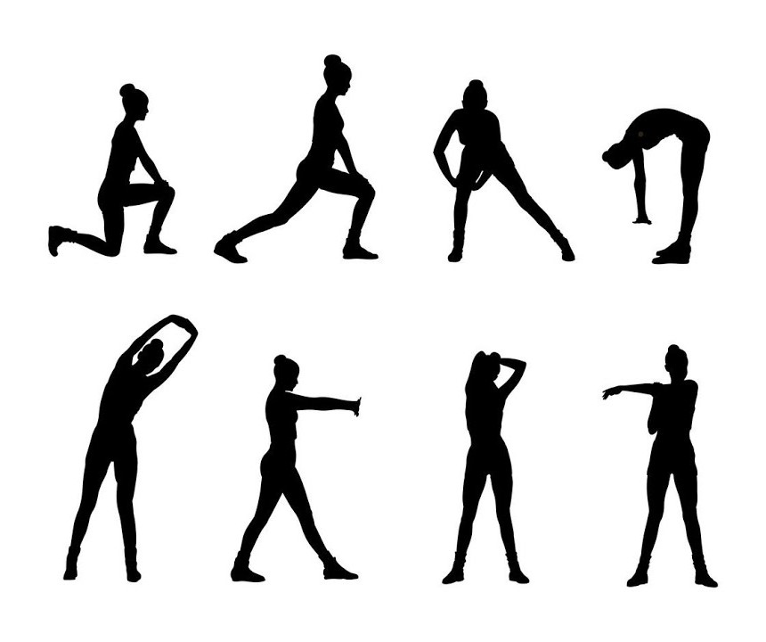
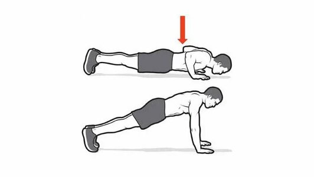
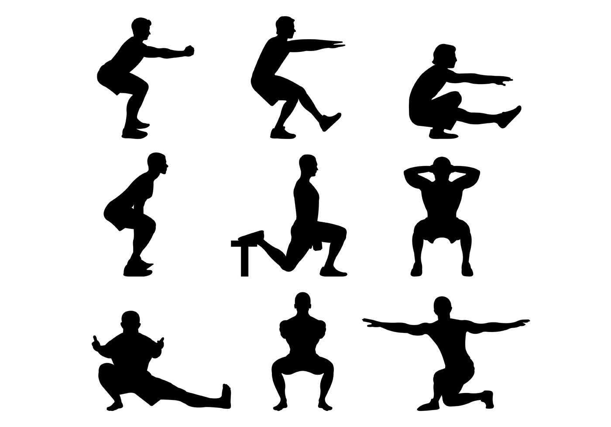
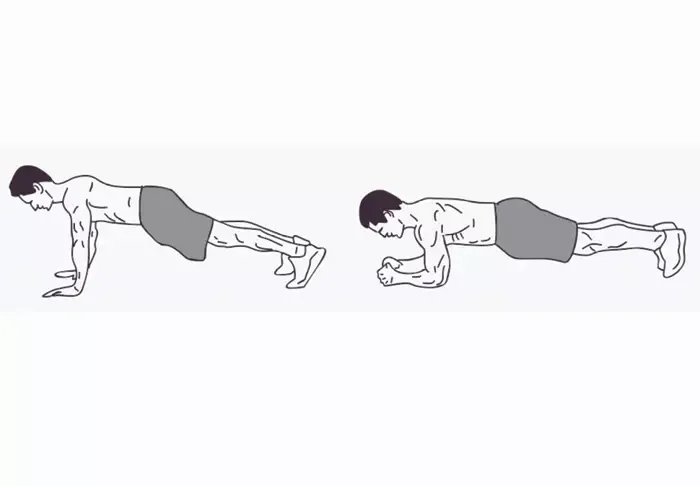
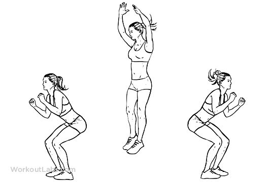

Практические упражнения
Разминка
Разминка необходима для подготовки мышц и суставов перед основной тренировкой. Сделайте 5-10 минут легких движений, таких как вращения руками и ногами, наклоны, прыжки на месте.
Отжимания
Отжимания укрепляют грудные, плечевые и трицепсовые мышцы. Выполняйте 3 подхода по 12-15 повторений для максимального эффекта.
Приседания
Приседания развивают силу ног и ягодиц. Рекомендуется выполнить 3 подхода по 15-20 повторений для укрепления нижней части тела.
Планка
Планка укрепляет мышцы кора, улучшает осанку и стабильность. Выполните планку на 30-60 секунд, 3 подхода.
Прыжки
Прыжки развивают выносливость и координацию. Сделайте 3 подхода по 20-30 прыжков.
